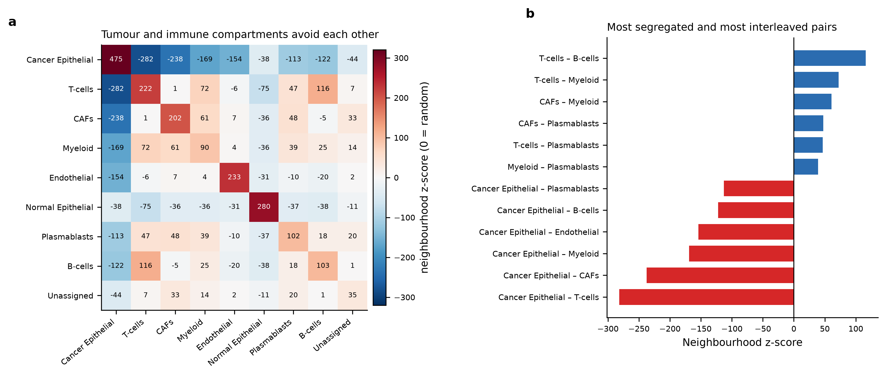
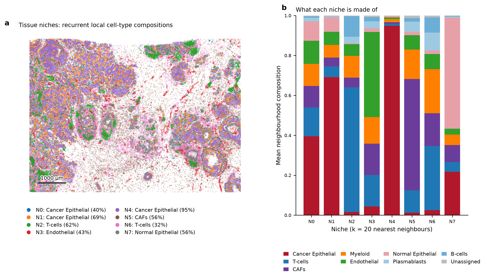
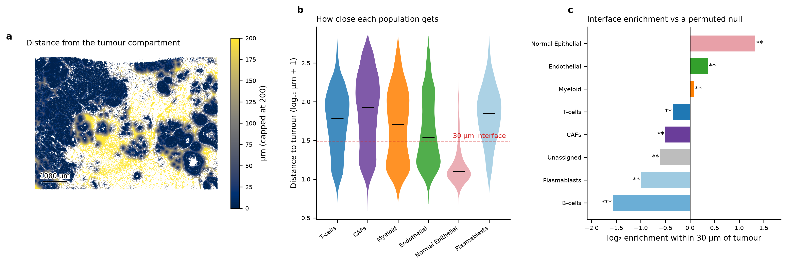

3 · Spatial structure
Spatial neighbourhoods and the tumour–immune interface
Who touches whom, which recurrent niches the tissue is built from, and which populations are enriched at the tumour boundary.
Cell typing answers what is here. The tissue question is what is next to what, and it needs a different set of tools: a spatial graph, a null model that respects the geometry, and effect sizes rather than p-values alone. With 167,780 cells, almost any arrangement is "significant"; the number that matters is how far from random it is.
The spatial graph
Neighbours are defined by Delaunay triangulation with edges longer than 60 µm removed. This choice matters more than it looks. A fixed-k graph spans a few microns inside a dense tumour nest and tens of microns in loose stroma, so a single k silently asks a different biological question in each compartment. Delaunay adapts to local density; the distance cap stops cells on opposite sides of a tissue void from being called neighbours.
Which cell types touch each other?

The strongest segregation is Cancer Epithelial – T-cells (z = -282) and the strongest co-location is T-cells – B-cells (z = 116). The diagonal of the matrix is strongly positive throughout, which is the expected signature of a compartmentalised tissue: cells of a type are overwhelmingly adjacent to their own kind. In a tumour that pattern is the quantitative statement of "nests and stroma", and its strength is the thing worth comparing between patients.
Recurrent niches
Pairwise adjacency misses multi-way structure — a region where three populations are interleaved is not described by any single pair. Niches capture it directly: for every cell, take the cell-type composition of its 20 nearest neighbours, and cluster those composition vectors across the whole section. Cells land in the same niche when their local mixture is alike, regardless of where in the tissue they sit.

| Niche | Dominant composition |
|---|---|
| N0 | Cancer Epithelial 40%, T-cells 14%, Endothelial 12% |
| N1 | Cancer Epithelial 69%, Normal Epithelial 7%, Endothelial 7% |
| N2 | T-cells 62%, Myeloid 11%, B-cells 10% |
| N3 | Endothelial 43%, T-cells 16%, CAFs 16% |
| N4 | Cancer Epithelial 95%, Myeloid 2%, T-cells 1% |
| N5 | CAFs 56%, Myeloid 15%, T-cells 11% |
| N6 | T-cells 32%, Myeloid 22%, CAFs 16% |
| N7 | Normal Epithelial 56%, Cancer Epithelial 22%, CAFs 8% |
The tumour–immune interface
The clinically interesting question is not whether immune cells are present but whether they reach the tumour. Each non-tumour cell is assigned its Euclidean distance to the nearest cell of the tumour compartment, and the test asks whether a population is over- or under-represented within 30 µm of that boundary relative to a null that permutes cell-type labels across fixed positions (1,000 permutations, Benjamini–Hochberg corrected).

| Population | Observed in band | Expected (null) | log₂ enrichment | z | q (BH) |
|---|---|---|---|---|---|
| Normal Epithelial | 90.4% | 36.0% | 1.33 | 111.7 | 0.008 |
| Endothelial | 46.4% | 36.0% | 0.36 | 25.6 | 0.004 |
| Myeloid | 38.1% | 36.0% | 0.08 | 6.4 | 0.003 |
| T-cells | 28.2% | 36.0% | -0.35 | -33.5 | 0.002 |
| CAFs | 25.4% | 36.0% | -0.50 | -37.3 | 0.002 |
| Unassigned | 23.6% | 36.0% | -0.61 | -7.0 | 0.001 |
| Plasmablasts | 18.0% | 36.0% | -1.00 | -25.3 | 0.001 |
| B-cells | 12.1% | 36.0% | -1.57 | -33.9 | < 0.001 |
8 of 8 non-tumour populations differ significantly from the null at q < 0.05. Normal Epithelial is the most strongly enriched population at the boundary (log2 1.33, 90.4% of its cells within the band against 36.0% expected) and B-cells is the most strongly excluded (log2 -1.57). The direction and magnitude together are the result; the p-value on this many cells is not informative on its own.
Read these as description, not mechanism. Proximity is not interaction: two cells 20 µm apart in a fixed section may never have signalled to each other, and ligand–receptor inference on a targeted panel would add precision without adding evidence. The permutation null holds positions fixed and shuffles labels, so it controls for tissue geometry and density but not for the possibility that cell typing errors are themselves spatially structured — segmentation bleed at the tumour boundary is exactly such an error, and it would act to inflate apparent immune presence at the interface. One section of one tumour supports no claim about breast cancer in general.